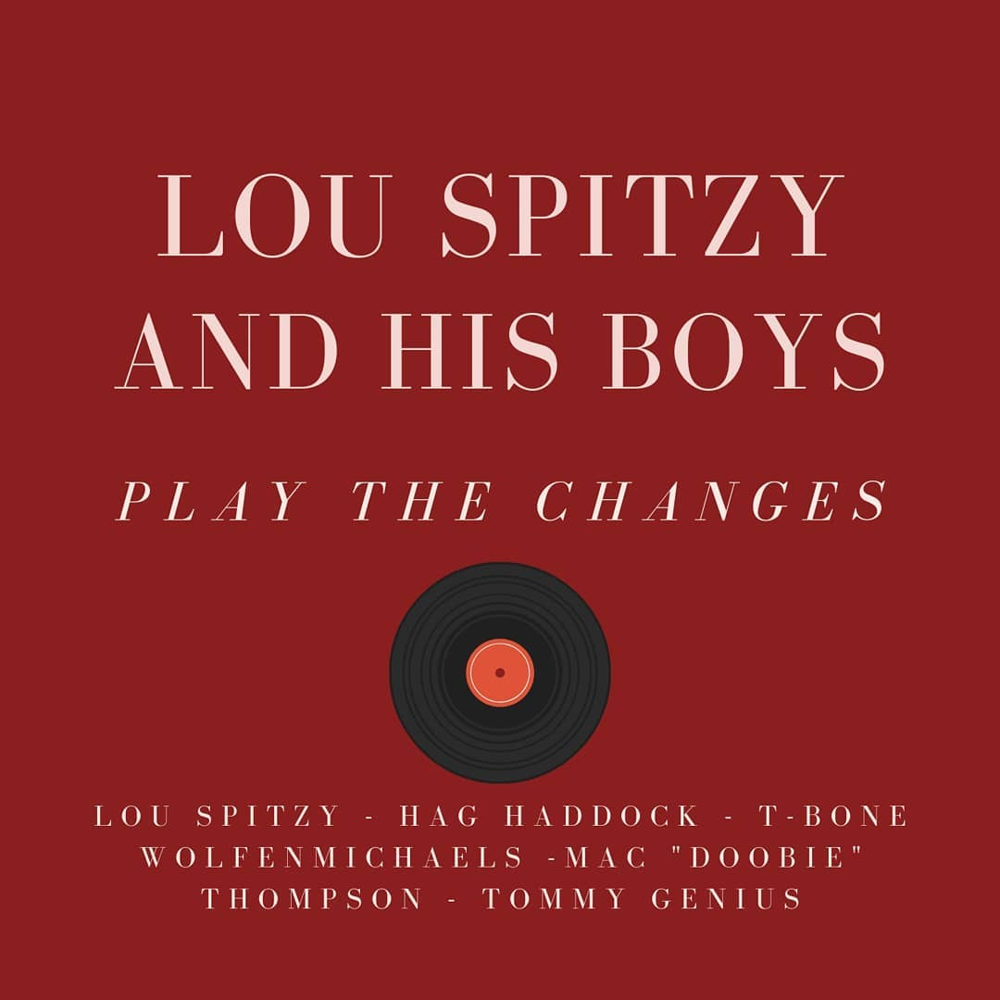
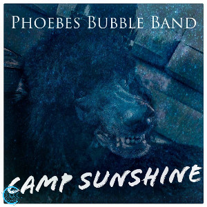
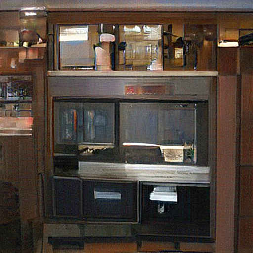

The late, great contraversial Webgod has passed on to internet heaven. \n
Unfortunately, the last remnant of his legacy is the highly insensitive \n
photo that see below. Unfortunately, we cannot remove it. Please do not \n
take this background image as a representation of our company image.
Our news
Harloy Leroy-Hammer

2004-09-22.gif
CROSSTALK with Jim Brand (EP 1)
Did you hear about our new jazz album? It's called Jazz Me The Fuck Up. (Laughter.) Our first single on the new album is called "Gimme Some. Gimme Some More." You can pre-order it: it's on iTunes.
We're here with three guests. First up is a guy who makes his living selling CDs. This is Bob Ross. How'd you come by that name?
BRIAN ROSS: I started out at Sony in 1981. My dad used to bring me to all the CD stores to try to buy my dad CDs. (Laughter.) My mom used to go at it too. She used to make me do a lot of the CDs. So, we have all gone to Sony. We moved out of a couple places. I got to the point where I was pretty good at selling CDs and that wasn't a problem because I still like to buy records. I did that all the time.
JIM BRAND: Right.
BRIAN ROSS: And then all of the sudden I started going out and talking about how CDs hurt and that's why I got into selling them a little bit more.
I sold CDs to them a lot too and they'd buy them. A lot of the time I'd get a big package from my house, it's like six or seven boxes, so everybody wants to listen to that. And I don't think that's what you're talking about. I don't understand.
JAMES BANKS: The last record, you made three records.
BRIAN ROSS: Right, we made three records, but then I sold them all at once and I took them to Columbia House.
JIM BRAND: We were like, "Hey, you'll get two and a half million dollars if we do three." And that's what I told them. I did, you know, you get two and a half million dollars if we do three albums, and we made 'em.
BRIAN ROSS: We went back and forth at Columbia House. It was funny because my friend Jeff Bux recalled seeing this big white wall, all the way to the left, so that we could sell our records. And he was like, "You know, I had never seen that wall, I've never seen that wall at Columbia House, but you can see it in there." And I said, "Jeff, I told you, that wall is a lie, I never said it was two and a half million dollars." And that's when I said, "Jeff, go fuck yourselves." I think in some ways 'cause it didn't hurt them that much.
ROBERT RYBE: We had no interest in doing that, we never did. I mean, we wanted to work together, we never did. I mean, we wanted to work together, but we went to the studio and recorded the record like it was a commercial or something. But there was nothing about me and Bill talking about it. It was funny because as they were writing songs about sex and drugs and all that stuff…
KEVIN BROOKS: We're listening to The Beatles here
ROBERT RYBE: ... I'm in the studio thinking about it… and Bill is in the studio trying to work out the lyrics…
KEVIN BROOKS: He's got a hard time… and he's trying to keep up with the rhythm…
ROBERT RYBE: So he and me, we're having a hard time putting together a song. That's all…
KEVIN BROOKS: I think, I think it's a record for its times…
ROBERT RYBE: But, you know, all those people that we just talked about, they've been singing for 40 years, and we've never had a proper record made that's really captured the whole music… the band, all the musicians—people in there had been doing it for 40 years. So it made, it made it a very special record.
KEVIN BROOKS: That it captures all sides of the band in it. And, you know, I would say, I think, it would be a shame (to) have this record get lost in the mists of time.
(Laughter).
KEVIN BROOKS: Oh, yeah? I think we can do better. [Crowd applauds.]
HANSARD: That was a heck of a song, I think.
KEVIN BROOKS: [Laughs.]
JAY CAMPBELL: Thank you all! Good luck to you again and, um, to your fans.
LEBANON: Thank you, everybody.
KEVIN BROOKS: Thank you. Thank you.
LEBANON: Thank you.Thank you.
JAY CAMPBELL: Thank you. Thank you. Thank you. Thank you. (Applause.) Okay. (Applause.) Congratulations on being named "The Most Interesting Man In The World."
ROSANNE JACOBS: Good job. Good luck.
KEVIN BROOKS: Thank you for being here. I appreciate it.
JAY CAMPBELL: I'm so glad you're back. Thank you for being here. I appreciate you. Thank you for being here, and thank you for being the most interesting man in the world. (Applause.) (Applause.)
KEVIN BROOKS: Thank you for being here. And that's been great having you back; that was amazing. (Applause.) Thank you for being here. (Applause.) Thank you.
JAY CAMPBELL: Thank you. (Applause.) Thank you for being here. (Applause.) I appreciate you.
BEHAR: How are the kids doing?
JAY CAMPBELL: The kids are great. Very good. Very good.
BEHAR: And how are everybody doing, you guys? Great.
JAY CAMPBELL: So how are everybody doing? Great. They're doing great. I think that the only time we have a chance to talk and hear from people is when we have a chance to talk. So how you doing? Good, thanks.
Be good to each other.
JAY CAMPBELL: Have fun. (Applause.)
BEHAR: That's good to hear. Thank you, Jay.
CAMPER: Thank you.
KIMBERLY LOPEZ: It's hard not to be excited about this, actually. It's not that we're actually going to be able to see the space station, but that's a wonderful thing. There's a wonderful feeling that we're starting to bring all of the countries together. The hope is that this will be a source of innovation and innovation in the world. So, you know, I have to say I'm a little anxious as I look about — my kids are on the way, so I'm watching the whole trip now.
BEHAR: Oh, my God!
LOPEZ: I will be the first to admit that there aren't a lot of things to look forward to. There's plenty of stuff that I'm excited about, but I do not want to rush my kids into it too hard. But there would be tons to watch, especially as it relates to NASA's space program. This is a milestone for us and for people in the world.
BEHAR: I think you're going to have to bring a video camera. A high-definition one is probably what you'd want.
LOPEZ: Yeah, so we have another big project coming up on our site. That is a very cool movie that we're going to be showing next week. And it's just an all-ages movie that we're filming for a very cool, educational documentary about space exploration.
BEHAR: That's awesome! And I'm sure they'll be quite funny.
LOPEZ: Yeah, I think this might be the best way to start the session, but I also hope you'll find it to be a very illuminating session.
CHERYL: We really wanted to make it as interesting as we possibly could, and we really needed everybody.
DANIEL: It was very interesting having such an ethnically diverse crowd.
WILLIS: I had a great time, and they were really nice. As soon as we get into the first session, though, we're totally on the same page.
DAVID: When I was 15, I took an English class. I got a B to my transcript and went home and wrote down the following: "I will learn how to write in English with only English words." Now I'm in the same situation. As soon as I get on stage at a improv show, I'm going to do what my teachers taught me.
CHERYL: If we had three people that have this mentality of trying to read all of the words like an encyclopedia, we never get to the point where we know what we don't know. But it's like when you go to a baseball game, and the pitcher asks you to throw an inside slider in a spot where he expects you to swing at it, you get frustrated and say, "I don't know where that guy is throwing that slider. I can't swing at that.
JIM BRAND: All right. Well, that just about wraps up this interview. Thank you all for coming.
[music playing]
[MUSIC]
HANG ON CONGRATULATIONS, SIR WAGNER!
[music] [back to top]
(CROSSTALK)
DAVID BROOK: I'm David Brook. This is CROSSTALK. I'm listening to The Heart of Tomorrow by The Band. They had this song, "Tightrope," but I want to ask you. Was this your song? Is this your song?
KENT BRYAN: This isn't my song, no.
DAVID BROOK: Well, it wasn't ours.
KENT BRYAN: No. It wasn't my song.
DAVID BROOK: Is it, "Tightrope," by The Band?
KENT BRYAN: No.
DAVID BROOK: It's "Tightrope. That's right, Kent?
KENT BRYAN: It's not my song.
And now.... we are proud to present the newest work by our Chinese engineering team.... "THE PROTOTYPE"!
